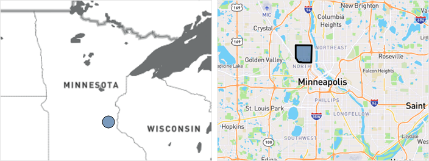

Northside Achievement Zone
Promise Neighborhood
Promise Neighborhood
Minneapolis, MN
About the Neighborhood
The Northside Achievement Zone (NAZ) is a collaboration of organizations and schools partnering with families in North Minneapolis to prepare children to graduate from high school ready for college. Supported through a public-private partnership, more than 40 service providers and schools are working towards ending multigenerational poverty within North Minneapolis. NAZ serves eight K-12 schools in the neighborhood.
People
About 15,000 residents
including about 5,600 children
including about 5,600 children
African-American,
18% Asian, 8% Hispanic, and
7% other minorities
18% Asian, 8% Hispanic, and
7% other minorities
Challenges
A community dominated by high rates of violence, poverty (3 times the national poverty rate), unemployment, and failing schools
Homelessness and mobility: One in four students were homeless or highly mobile; one in two students live in single parent households
Large achievement gaps for 8th graders in math (49th out of 50 states) and in reading (45th out of 50 states)
High school graduation rate: About half of students graduate within four years
Sources: NAZ 2011 Grant Application (https://www2.ed.gov/programs/promiseneighborhoods/2011narr/northside.pdf).
Place

A contiguous 13-by-18 block area in North Minneapolis, including 9 target schools in or near the Zone
A contiguous 13-by-18 block area in North Minneapolis, including 9 target schools in or near the Zone
Northside Achievement Zone
Promise Neighborhood
Promise Neighborhood
Minneapolis, MN
Major strategies used
Supporting families with reliable housing, parents who are on a high-quality career path, and strong ties to others in the community
Implementing college-going marketing campaigns and programs directed to both youth and their families
Coordination with Anchor Schools to ensure students are making adequate progress toward on time graduation and post-secondary preparation
Selected Outcomes
Decrease in the student mobility rate
Increase in the percentage of parents who talk with their child about the importance of college and career
Increase in the percentage of students graduating from high school in four years
“Through NAZ, North Minneapolis is beginning a community-wide transformation toward a college-going culture. Parents are now making college a top family priority and taking effective action to support the success of their children, starting at birth. Together, we are leading innovative efforts to close the academic achievement gap for low-income children of color.”
— Northside Achievement Zone